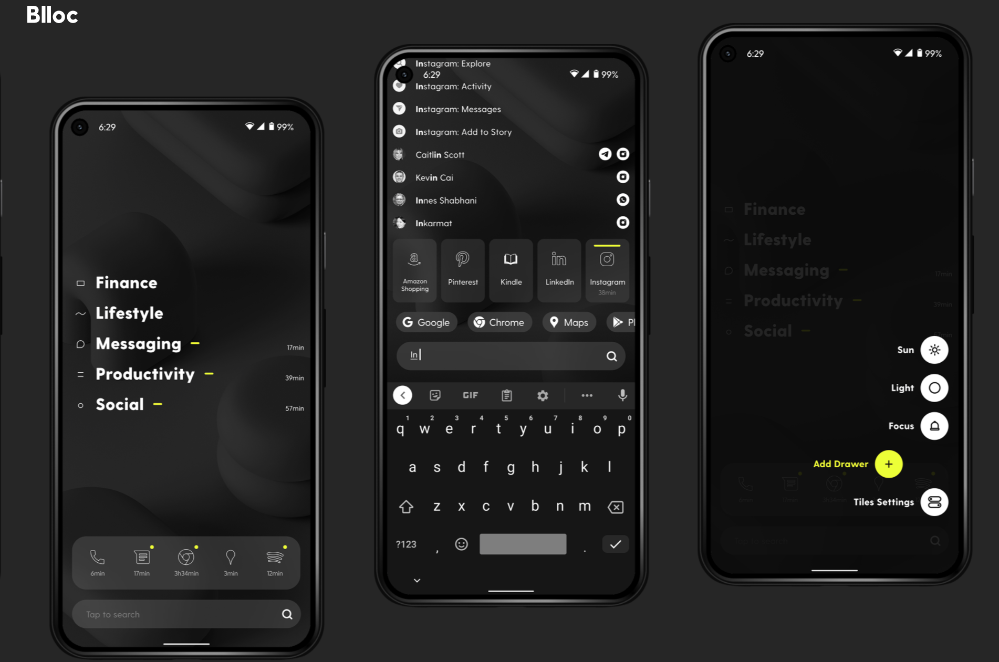

| |
Current Project: Passive SensingCan digital phenotypes help with hyrbid therapy by predicting clinical disorders like depression |
|---|---|
| |
Current Project: Swarm Intelligence and Decision Making
How do groups look for information when rewarded differently |
| |
Hybrid Cultural EvolutionCan we enhance decision making through bots in the context of hybrid cultural evolution? |
|  |
MindfulphoneCreating a fluid design for every situation. Enhancing mindfulness, minimizing distractions. |
| |
HeartbitEnhancing Mindfulness and Stress Reduction through tangible biofeedback |
The Sound of ShapesVariation of the Bouba/Kiki phenomenon, which involves non-arbitrary, cross-sensory mapping of sound and abstract shapes. |
 |
Holding my heart in your handHow can we dissolve boundaries between different groups? Going back to the core to explore how we can perceive each other as more similar. |